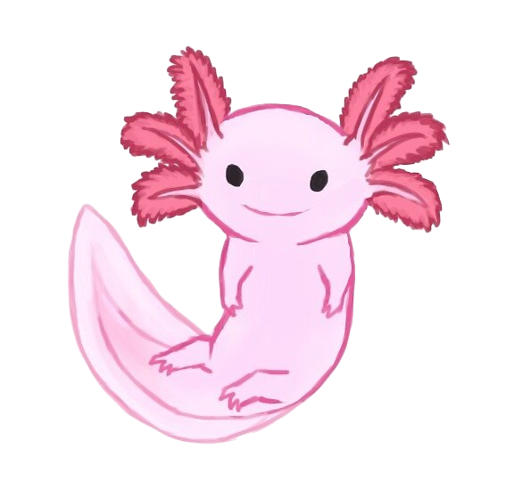

About Me
tiredaxolotl521 is my UI/UX Designer alter ego who thrives in "why" and "how" of design. They strive to make amazing products with flexibility, speed, and quality. This portfolio showcases their creative design and technical skills. To learn more about the projects, clicking on the projects below or use to the left hand nav bar to navigate to a specified project. You can also view all projects on GitHub by clicking on the button below.